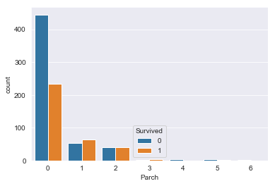

泰坦尼克预测问题 该问题是根据船上的乘客信息，构建一个二分类模型来判断船上的乘客是否存活的问题。该一个非常上手的问题，网上讨论的比较多，就用这个来练练手。
数据下载链接:点我下载 .分为train和test数据集
特征分析与抽取
1 2 3 4 import pandas as pdtrain_data=pd.read_csv('/Users/mac/Downloads/train.csv' ) test_data=pd.read_csv('/Users/mac/Downloads/test.csv' ) train_data.head(10 )
数据中’Survived’列作为label，其他列作为features。在feature中存在一些NaN值，因此需要对缺失值进行处理。
1 2 train_data.info() test_data.info()
1 2 3 4 5 6 7 8 9 10 11 12 13 14 15 16 17 18 19 20 21 22 23 24 25 26 27 28 29 30 31 32 33 <class 'pandas .core .frame .DataFrame '> RangeIndex :891 entries, 0 to 890 Data columns (total 12 columns): PassengerId 891 non-null int64 Survived 891 non-null int64 Pclass 891 non-null int64 Name 891 non-null object Sex 891 non-null object Age 714 non-null float64 SibSp 891 non-null int64 Parch 891 non-null int64 Ticket 891 non-null object Fare 891 non-null float64 Cabin 204 non-null object Embarked 889 non-null object dtypes: float64(2 ), int64(5 ), object(5 ) memory usage: 83.6 + KB <class 'pandas .core .frame .DataFrame '> RangeIndex :418 entries, 0 to 417 Data columns (total 11 columns): PassengerId 418 non-null int64 Pclass 418 non-null int64 Name 418 non-null object Sex 418 non-null object Age 332 non-null float64 SibSp 418 non-null int64 Parch 418 non-null int64 Ticket 418 non-null object Fare 417 non-null float64 Cabin 91 non-null object Embarked 418 non-null object dtypes: float64(2 ), int64(4 ), object(5 ) memory usage: 36.0 + KB
PassengerId ：用户ID，是一个无用特征，进行丢弃。
Pclass : 乘客的船票的等级(1 = 1st, 2 = 2nd, 3 = 3rd)。
经验上来说等级越高，获救的可能性越大，下图中1等座显然获救的比例较高。
1 2 import seaborn as snssns.countplot(x="Pclass" , hue="Survived" , data=train_data)
Name : 乘客名字
有人从乘客名字发现一些规律，比如社会地位等等，这里暂且不去考虑。
Sex : 乘客性别(male, female)
女士优先不多说了,我们来看看结果如何。
1 sns.countplot(x="Sex" , hue="Survived" , data=train_data)
很显然，女士获救的可能性很大。
Age : 乘客年龄(Year)
在危难时刻，不知道西方有没有尊老爱幼的传统。
1 sns.violinplot(x='Survived' ,y='Age' ,hue='Survived' ,data=train_data,split=True )
图中看到尊老不是很明显，但是爱幼绝对是有的。获救的年龄在最下面占得比重明显比未获救的要大。
此外发现Age中存在缺失值，先观察缺失值是否可看做一类
1 2 train_data['Age' ]=train_data['Age' ].map(lambda x:'yes' if 0 <x<100 else 'no' ) sns.countplot(x="Age" , hue="Survived" , data=train_data)
图中有缺失的幸存概率相对于无缺失的较小，我们因此可以将其看作一类。此处修改了train_data[‘Age’]的值，需要对train_data进行重新加载，即有
1 train_data=pd.read_csv('/Users/mac/Downloads/train.csv' )
我们对其进行分类，则对train_data和test_data更新有
1 2 3 train_data['Age' ]=train_data['Age' ].map(lambda x: 'child' if x<12 else 'youth' if x<30 else 'adlut' if x<60 else 'old' if x<75 else 'tooold' if x>=75 else 'null' ) test_data['Age' ]=test_data['Age' ].map(lambda x: 'child' if x<12 else 'youth' if x<30 else 'adlut' if x<60 else 'old' if x<75 else 'tooold' if x>=75 else 'null' )
Sibsp ：船上兄弟姐妹/配偶的人数
兄弟姐妹/配偶的人数存在差异，因此该特征有效。
按照分布相似性，这里我们将（0，1~2，3~4，5~8）分为四类
1 2 train_data['Parch' ]=train_data['Parch' ].map(lambda x: 'sigle' if x<1 else 'small' if x<4 else 'large' ) test_data['Parch' ]=test_data['Parch' ].map(lambda x: 'sigle' if x<1 else 'small' if x<4 else 'large' )
Parch : 船上父母/儿女的人数

分布与Sibsp特征类似。按照分布相似性，这里我们将（0，1~3，4~6）分为三类
1 2 train_data['Parch' ]=train_data['Parch' ].map(lambda x: 'sigle' if x<1 else 'small' if x<4 else 'large' ) test_data['Parch' ]=test_data['Parch' ].map(lambda x: 'sigle' if x<1 else 'small' if x<4 else 'large' )
Ticket : 船票号码
应该没什么关系吧，可以去掉
Fare : 船票价格
一般商务人士或者有钱人才能坐得起票价较高的船票，不过test集合中，其中存在一些缺失值，我们需要对其进行处理，我们将其中的缺失值用均值来填充
1 test_data.Fare.fillna(test_data['Fare' ].mean(), inplace=True )
然后我们对数据进行观察，
数据分布不规则，需要进行缩放处理
1 2 train_data['Fare' ]=train_data['Fare' ].map(lambda x:np.log(x+1 )) test_data['Fare' ]=test_data['Fare' ].map(lambda x:np.log(x+1 ))
由图中的分布特点可以看出，将Fare特征可以分为四类（小于1,1~3,3~4,大于4）
1 2 train_data['Fare' ]=train_data['Fare' ].map(lambda x: 'very_pool' if x<1 else 'pool' if x<3 else 'rich' if x<4 else 'very_rich' ) test_data['Fare' ]=test_data['Fare' ].map(lambda x: 'very_pool' if x<1 else 'pool' if x<3 else 'rich' if x<4 else 'very_rich' )
Cabin : 船舱号
船舱号缺失值太多了，并且未缺失的里面的数据不是特性也不明显，不如像之前和年龄缺失值处理类似的去观察缺失值与非缺失值是否构成新的两组特征。这里直接用数据类型进行判断，type(有缺失)=int，type(无缺失)=str。
1 2 train_data['Cabin' ]=train_data['Cabin' ].map(lambda x:'yes' if type(x)==str else 'no' ) sns.countplot(x="Cabin" , hue="Survived" , data=train_data)
貌似无缺失的情况下，存活的可能性较大点，那么我们也就将test中的数据进行这样的变换。
1 test_data['Cabin' ]=test_data['Cabin' ].map(lambda x:'yes' if type(x)==str else 'no' )
Embarked : 出发港口(C = Cherbourg, Q = Queenstown, S = Southampton)
还是画图观察，看看出发港口与存活情况的关系
在C港存活概率较高，看来还是有点关系的。此外train数据中有缺失值，我们用众数S港来填充，则有
1 train_data.Embarked.fillna('S' , inplace=True )
至此，我们将数据进行抽取完毕，看看属性
1 2 train_data.info() test_data.info()
1 2 3 4 5 6 7 8 9 10 11 12 13 14 15 16 17 18 19 20 21 22 23 24 25 26 27 28 29 30 31 32 33 <class 'pandas .core .frame .DataFrame '> RangeIndex :891 entries, 0 to 890 Data columns (total 12 columns): PassengerId 891 non-null int64 Survived 891 non-null int64 Pclass 891 non-null int64 Name 891 non-null object Sex 891 non-null object Age 891 non-null object SibSp 891 non-null object Parch 891 non-null object Ticket 891 non-null object Fare 891 non-null object Cabin 891 non-null object Embarked 891 non-null object dtypes: int64(3 ), object(9 ) memory usage: 83.6 + KB <class 'pandas .core .frame .DataFrame '> RangeIndex :418 entries, 0 to 417 Data columns (total 11 columns): PassengerId 418 non-null int64 Pclass 418 non-null int64 Name 418 non-null object Sex 418 non-null object Age 418 non-null object SibSp 418 non-null object Parch 418 non-null object Ticket 418 non-null object Fare 418 non-null object Cabin 418 non-null object Embarked 418 non-null object dtypes: int64(2 ), object(9 ) memory usage: 36.0 + KB
具体内容
生成训练数据train_feature，train_label和test_feature,并进行one-hot编码
1 2 3 4 5 train_label= train_data['Survived' ] train_feature= train_data.drop(['PassengerId' ,'Survived' ,'Name' ,'Ticket' ],axis=1 ) test_feature= test_data.drop(['PassengerId' ,'Name' ,'Ticket' ],axis=1 ) train_feature = pd.get_dummies(train_feature) test_feature = pd.get_dummies(test_feature)
模型构建与参数调整
SVM模型
1 2 3 4 5 6 7 8 9 10 11 from sklearn.svm import SVCfrom sklearn.model_selection import GridSearchCVparameters = {'kernel' :('linear' , 'rbf' ,'sigmoid' ), 'C' :[1 , 2 , 4 ], 'gamma' :[0 ,0.0001 ,0.001 ,0.01 ,0.1 ,1 ]} svr = SVC() clf = GridSearchCV(svr, parameters, n_jobs=-1 ) clf.fit(train_feature,train_label) print (clf.best_params_,clf.best_score_)svm_pre=clf.predict(test_feature) test_passengerId=test_data['PassengerId' ] df=pd.DataFrame({'PassengerId' :test_passengerId,'Survived' :svm_pre}) df.to_csv("submission.csv" ,index=False ,sep=',' )
1 {'C' : 2 , 'gamma' : 0.1 , 'kernel' : 'rbf' } 0.8237934904601572
提交后成绩为：0.78468
决策树
1 2 3 4 5 6 7 8 9 10 from sklearn import treetree=tree.DecisionTreeClassifier() parameters = {'criterion' :['gini' , 'entropy' ], 'max_depth' :range(2 ,20 ,2 ), 'max_features' :range(2 ,20 ,2 ) } clf = GridSearchCV(tree, parameters, n_jobs=-1 ) clf.fit(train_feature,train_label) print (clf.best_params_,clf.best_score_)tree_pre=clf.predict(test_feature) df=pd.DataFrame({'PassengerId' :test_passengerId,'Survived' :tree_pre}) df.to_csv("submission.csv" ,index=False ,sep=',' )
1 {'criterion' : 'entropy' , 'max_depth' : 4 , 'max_features' : 16 } 0.8215488215488216
提交后成绩为：0.78468
随机森林
1 2 3 4 5 6 7 8 9 10 from sklearn.ensemble import RandomForestClassifierparameters = {'n_estimators' :range(160 ,300 ,20 ),'max_depth' :range(1 ,12 ,3 ), 'max_features' :range(1 ,12 ,3 )} randtree=RandomForestClassifier() clf = GridSearchCV(randtree, parameters, n_jobs=-1 ) clf.fit(train_feature,train_label) print (clf.best_params_,clf.best_score_)rand_tree_pre=clf.predict(test_feature) df=pd.DataFrame({'PassengerId' :test_passengerId,'Survived' :rand_tree_pre}) df.to_csv("submission.csv" ,index=False ,sep=',' )
1 {'max_depth' : 4 , 'max_features' : 10 , 'n_estimators' : 240 } 0.8237934904601572
提交后成绩为：0.78947
lr模型
1 2 3 4 5 6 7 8 9 10 from sklearn.linear_model import LogisticRegressionlr=LogisticRegression() parameters = {'penalty' :['l1' , 'l2' ], 'C' :[1 ,2 ,3 ,4 ],'intercept_scaling' :[0.00001 ,0.0001 ,.001 ,.01 ] } clf = GridSearchCV(lr, parameters, n_jobs=-1 ) clf.fit(train_feature,train_label) print (clf.best_params_,clf.best_score_)lr_pre=clf.predict(test_feature) df=pd.DataFrame({'PassengerId' :test_passengerId,'Survived' :lr_pre}) df.to_csv("submission.csv" ,index=False ,sep=',' )
1 {'C' : 2 , 'intercept_scaling' : 1e-05 , 'penalty' : 'l1' } 0.7957351290684624
提交后成绩为：0.77990
贝叶斯模型
1 2 3 4 5 6 7 from sklearn.naive_bayes import GaussianNBNB=GaussianNB() NB.fit(train_feature,train_label) NB_pre=NB.predict(test_feature) test_passengerId=test_data['PassengerId' ] df=pd.DataFrame({'PassengerId' :test_passengerId,'Survived' :NB_pre}) df.to_csv("submission.csv" ,index=False ,sep=',' )
提交后成绩为：0.74162
KNN模型
1 2 3 4 5 6 7 8 9 10 11 12 13 14 from sklearn.neighbors import KNeighborsClassifierneigh = KNeighborsClassifier() parameters = { 'n_neighbors' :range(8 ,16 ,1 ), 'p' :[1 ,1.5 ,2 ], 'leaf_size' :range(8 ,16 ,1 ), } clf = GridSearchCV(neigh, parameters, n_jobs=-1 ) clf.fit(train_feature,train_label) print (clf.best_params_,clf.best_score_)neigh_pre=clf.predict(test_feature) test_passengerId=test_data['PassengerId' ] df=pd.DataFrame({'PassengerId' :test_passengerId,'Survived' :neigh_pre}) df.to_csv("submission.csv" ,index=False ,sep=',' )
1 {'leaf_size' : 10 , 'n_neighbors' : 10 , 'p' : 1 } 0.8058361391694725
提交后的成绩为：0.76555
GBDT模型
1 2 3 4 5 6 7 8 9 10 11 12 from sklearn.ensemble import GradientBoostingClassifiergbdt=GradientBoostingClassifier() parameters = {'learning_rate' :[0.0001 ,0.001 ,0.1 ], 'n_estimators' :range(10 ,50 ,10 ), 'max_depth' :range(1 ,12 ,3 ), 'max_features' :range(1 ,12 ,3 )}clf = GridSearchCV(gbdt, parameters, n_jobs=-1 ) clf.fit(train_feature,train_label) print (clf.best_params_,clf.best_score_)gbdt_pre=clf.predict(test_feature) df=pd.DataFrame({'PassengerId' :test_passengerId,'Survived' :gbdt_pre}) df.to_csv("submission.csv" ,index=False ,sep=',' )
1 {'learning_rate' : 0.1 , 'max_depth' : 4 , 'max_features' : 4 , 'n_estimators' : 30 } 0.8260381593714927
提交成绩后得分：0.78468
Xgboost
1 2 3 4 5 6 7 8 9 10 11 12 13 14 15 16 from xgboost.sklearn import XGBClassifierxgb=XGBClassifier() parameters = {'learning_rate' :[0.0001 ,0.001 ,0.1 ], 'n_estimators' :range(10 ,50 ,10 ), 'max_depth' :range(1 ,10 ,3 ), 'min_child_weight' :[0.0001 ,0.001 ,.01 ], 'gamma' :[0.1 ,1 ,10 ], 'max_features' :range(1 ,12 ,3 ), 'subsample' :[0.4 ,0.8 ,1 ], 'colsample_bytree' :[0.4 ,0.8 ,1 ],} clf = GridSearchCV(xgb, parameters, n_jobs=-1 ) clf.fit(train_feature,train_label) print (clf.best_params_,clf.best_score_)xgb_pre=clf.predict(test_feature) df=pd.DataFrame({'PassengerId' :test_passengerId,'Survived' :xgb_pre}) df.to_csv("submission.csv" ,index=False ,sep=',' )
1 {'colsample_bytree' : 0.4 , 'gamma' : 0.1 , 'learning_rate' : 0.1 , 'max_depth' : 4 , 'max_features' : 1 , 'min_child_weight' : 0.0001 , 'n_estimators' : 40 , 'subsample' : 0.8 } 0.8305274971941639
提交成绩后得分：0.77511
多层网络模型
1 2 3 4 5 6 7 8 9 10 11 12 13 14 15 16 17 18 19 20 from sklearn.neural_network import MLPClassifierMLP=MLPClassifier() parameters = {'hidden_layer_sizes' :[200 ], 'activation' :['logistic' ,'tanh' , 'relu' ], 'solver' :['adam' ], 'alpha' :[.01 ,.1 ,1 ], 'batch_size' :[16 ,32 ], 'learning_rate' :['invscaling' ], 'learning_rate_init' :[.0001 ,.001 ], 'power_t' :[0.5 ,0.4 ], 'max_iter' :[500 ,200 ], 'shuffle' :[True ] } clf = GridSearchCV(MLP, parameters, n_jobs=-1 ) clf.fit(train_feature,train_label) print (clf.best_params_,clf.best_score_)MLP_pre=clf.predict(test_feature) test_passengerId=test_data['PassengerId' ] df=pd.DataFrame({'PassengerId' :test_passengerId,'Survived' :MLP_pre}) df.to_csv("submission.csv" ,index=False ,sep=',' )
1 {'activation' : 'relu' , 'alpha' : 0.1 , 'batch_size' : 32 , 'hidden_layer_sizes' : 200 , 'learning_rate' : 'invscaling' , 'learning_rate_init' : 0.001 , 'max_iter' : 500 , 'power_t' : 0.4 , 'shuffle' : True , 'solver' : 'adam' } 0.8260381593714927
最终得分：0.77511
投票
全部参与
1 2 3 4 5 6 7 8 9 sum_ways=MLP_pre+lr_pre+tree_pre+svm_pre+xgb_pre+rand_tree_pre+gbdt_pre+NB_pre+neigh_pre vote=[] for i in sum_ways: if i<5 : vote.append(0 ) else : vote.append(1 ) df=pd.DataFrame({'PassengerId' :test_passengerId,'Survived' :vote}) df.to_csv("submission.csv" ,index=False ,sep=',' )
最终得分：0.77511
初步的模型调参下，随机森林最好。方法虽然很多，但是数据特征才是最关键的，希望日后能多多积累相关的经验